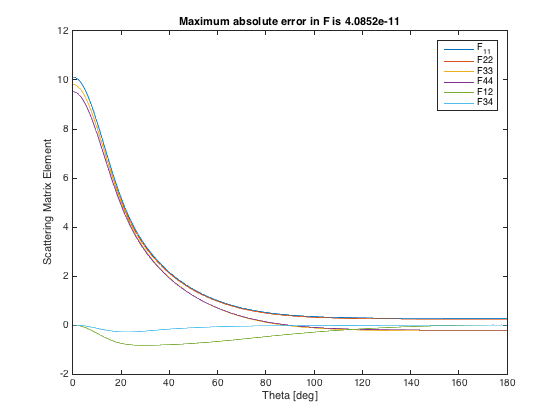

ScriptSolveForT
An example script showing how to obtain the T-matrix and the scattering matrix for random orientation for a spheroid at a single wavelength. Prints the cross-sections with accuracy estimates, saves the T-matrix elements to an external text file, and plots the theta-dependent scattering matrix elements.
Contents
- Initialization
- Parameters of the scattering problem
- Convergence parameters
- Collect simulation parameters in a structure
- Solving for the T-matrix
- Reshape the T-matrix to long format, and export to text file
- Display orientation-averaged results
- Calculate the scattering matrix, test its accuracy, and plot the results
Initialization
Note that you need to run InitPath in the root folder first to add required folders to the Matlab path so that functions can be called Alternatively, uncomment the following line
run('..\InitPath');
The following parameters should be defined:
- a: semi-axis along x,y
- c: semi-axis along z
- k1: wavevector in embedding medium (of refractive index nM) (k1=2*pi*nM/lambda)
- s: relative refractive index (s=n_Particle / nM)
- N: number of multipoles for T-matrix
- nNbTheta: number of thetas for quadratures
clear all close all
Parameters of the scattering problem
We define aspect ratio, wavenumber, and size parameter for a prolate spheroid

h = 10; % aspect ratio, h=c/a for prolate spheroids s = 1.5+0.02i; % relative refractive index k1 = 1; % incident wavenumber k1=2pi/lambda * nM xmax = 10; % maximum size parameter xmax= k1 * max(a,c) % ... from which we deduce c = xmax / k1; a = c / h;
Convergence parameters
% Maximum multipole order for T-matrix and series expansions of fields N = 30; % Number of points for Gaussian quadratures to compute integrals in P and Q matrices nNbTheta = 120;
Collect simulation parameters in a structure
stParams.a=a; stParams.c=c; stParams.k1=k1; stParams.s=s; stParams.N=N; stParams.nNbTheta=nNbTheta; % Optional parameters may also be defined as follows: stOptions.bGetR = false; stOptions.Delta = 0; stOptions.NB = 0; % NB will be estimated automatically stOptions.bGetSymmetricT = false;
Solving for the T-matrix
tic; % For the Scattering matrix, we need to keep the entire T-matrix [stCoa, CstTRa] = slvForT(stParams, stOptions); fprintf('\nT-matrix (N = %d) ... done in %.f seconds.\n', N, toc); % To test for convergence and accuracy for a given set of parameters, one % can for example repeat the calculation with N=N+5 and nNbTheta=nNbTheta+5 % as illustrated below fprintf('Convergence testing...\n'); tic; stParams2=stParams; stParams2.N=stParams2.N+5; stParams2.nNbTheta=stParams2.nNbTheta+5; [stCoa2, CstTRa2] = slvForT(stParams2,stOptions); fprintf('\nT-matrix (N = %d) ... done in %.f seconds.\n', N, toc);
sphCalculatePQ: Calculating P,Q for 31 m-values with N_Q = 30, N_B = 30, N_Theta = 120 T-matrix (N = 30) ... done in 1 seconds. Convergence testing... sphCalculatePQ: Calculating P,Q for 36 m-values with N_Q = 35, N_B = 35, N_Theta = 125 T-matrix (N = 30) ... done in 1 seconds.
Reshape the T-matrix to long format, and export to text file
T = exportTmatrix(CstTRa, 'Tmatrix.txt');
Display orientation-averaged results
fprintf('Results for a=%g, c=%g, k1=%g, s=%g+%gi, N=%d, Nt=%d\n',... a, c, k1, real(s),imag(s), N, nNbTheta); fprintf('\nCross sections for orientation-averaged excitation (and estimated accuracy):\n'); fprintf('<Cext> = %.20g, relative error: %.2g\n', stCoa.Cext, ... abs(stCoa.Cext./stCoa2.Cext-1)); fprintf('<Csca> = %.20g, relative error: %.2g\n', stCoa.Csca, ... abs(stCoa.Csca./stCoa2.Csca-1)); fprintf('<Cabs> = %.20g, relative error: %.2g\n', stCoa.Cabs, ... abs(stCoa.Cabs./stCoa2.Cabs-1));
Results for a=1, c=10, k1=1, s=1.5+0.02i, N=30, Nt=120 Cross sections for orientation-averaged excitation (and estimated accuracy): <Cext> = 18.737732166323052496, relative error: 7.1e-13 <Csca> = 16.60120453291043674, relative error: 2.7e-13 <Cabs> = 2.1365276334126157565, relative error: 8.3e-12
Calculate the scattering matrix, test its accuracy, and plot the results
lambda=2*pi/k1; % We need lambda here, so assume embedding medium is air nNbThetaSM=360; tic stSM = pstScatteringMatrixOA(CstTRa,lambda,stCoa.Csca,nNbThetaSM); fprintf('Scattering Matrix (N = %d) ... done in %.f seconds.\n', N, toc); tic stSM2 = pstScatteringMatrixOA(CstTRa2,lambda,stCoa2.Csca,nNbThetaSM); fprintf('Scattering Matrix (N = %d) ... done in %.f seconds.\n', N+5, toc); % errors in expansion coefficients alpha and beta errRelAB = abs(stSM.AllAB./stSM2.AllAB(1:(2*N+1),:)-1); errAbsAB = abs(stSM.AllAB-stSM2.AllAB(1:(2*N+1),:)); % errors in angle-dependent scattering matrix elements errRelF = abs(stSM.AllF./stSM2.AllF-1); errAbsF = abs(stSM.AllF-stSM2.AllF); figure('Name','Scattering matrix') plot(stSM.thetadeg,stSM.AllF(:,2:7)); xlabel('Theta [deg]') ylabel('Scattering Matrix Element') legend({'F_{11}','F{22}','F{33}','F{44}','F{12}','F{34}'}) title(['Maximum absolute error in F is ', num2str(max(max(errAbsF)))]);
Scattering Matrix (N = 30) ... done in 4 seconds. Scattering Matrix (N = 35) ... done in 7 seconds.